CullThing
Everything you do before Lightroom Classic, in one fast app.
Go through a shoot scene by scene, check faces and focus, and rate from the keyboard. Brush out distractions while you cull, and Lightroom generates every removal in one batch instead of making you wait on each photo.
Mac: Apple Silicon, macOS 13.4 or later · Windows: Intel/AMD x64
Test build, not signed yet, so both systems warn on first launch.
How to open it
What's new in 0.9.12
- Run first. Put selected photos ahead of a running auto-mark queue.
- EditThing. Fixed Lightroom save errors with “Always use camera profile”.
- Remote Access. The computer stays awake while a phone is loading photos, and no longer while a tab sits idle.
- Fixed a possible crash in a URL-handling library.
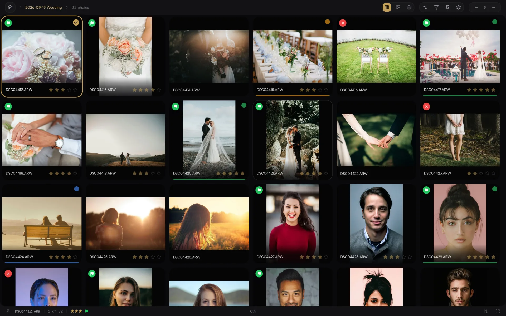
Culling
Scenes: the shoot, grouped into moments
CullThing splits the shoot wherever there's a gap between shots, so the details, the ceremony and each burst of portraits become their own scene. The scene list shows how many photos each one has and what you've already rated. Pick the best of a scene and move to the next.
If the grouping doesn't match how you shot, change it in Scene Settings:
- the time between shots that starts a new scene, from 2 seconds to 5 minutes
- visual similarity, to also split when the shots look different
- a maximum number of photos per scene
- separate scenes by lens, camera body, folder or orientation
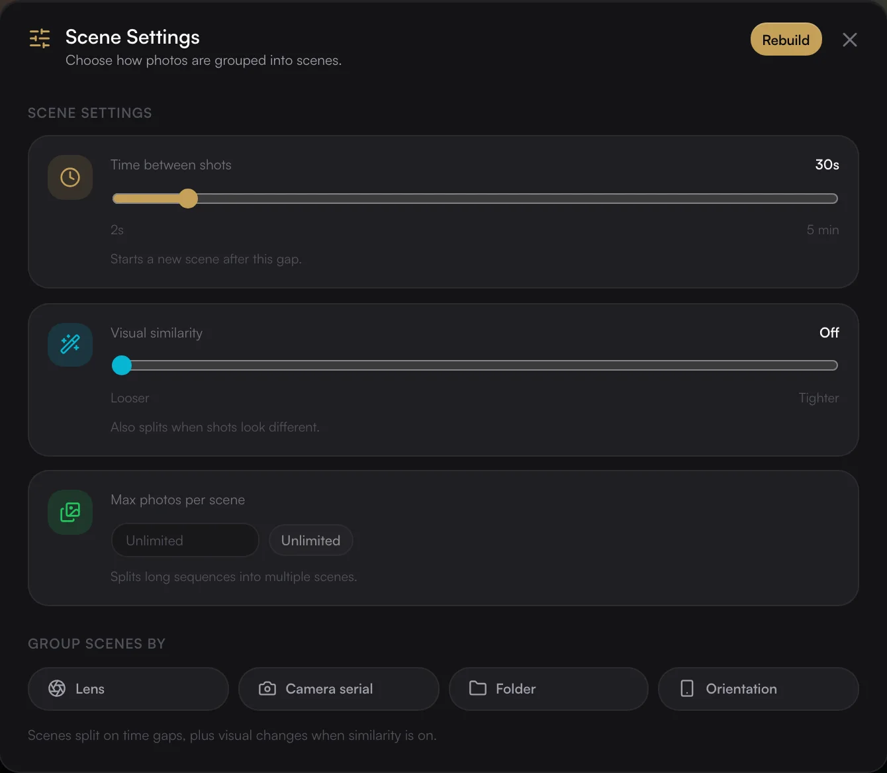
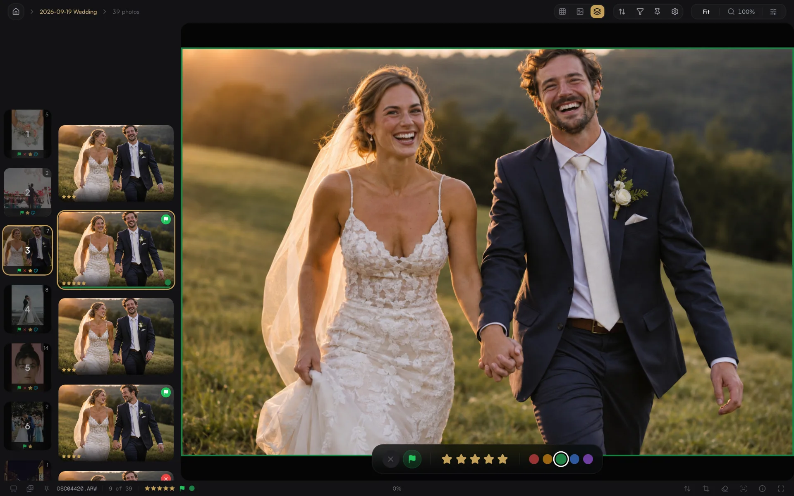
Faces, eyes and focus
The face panel shows each detected face enlarged, with a focus score from 1 to 10. Analyze Eyes marks eyes as open, partly closed or closed, so a blink doesn't slip through.
The zoom key goes straight to the sharpest face, or to the camera's focus point if you prefer. It keeps that spot as you step to the next frame, so you compare the same eyes across a burst.
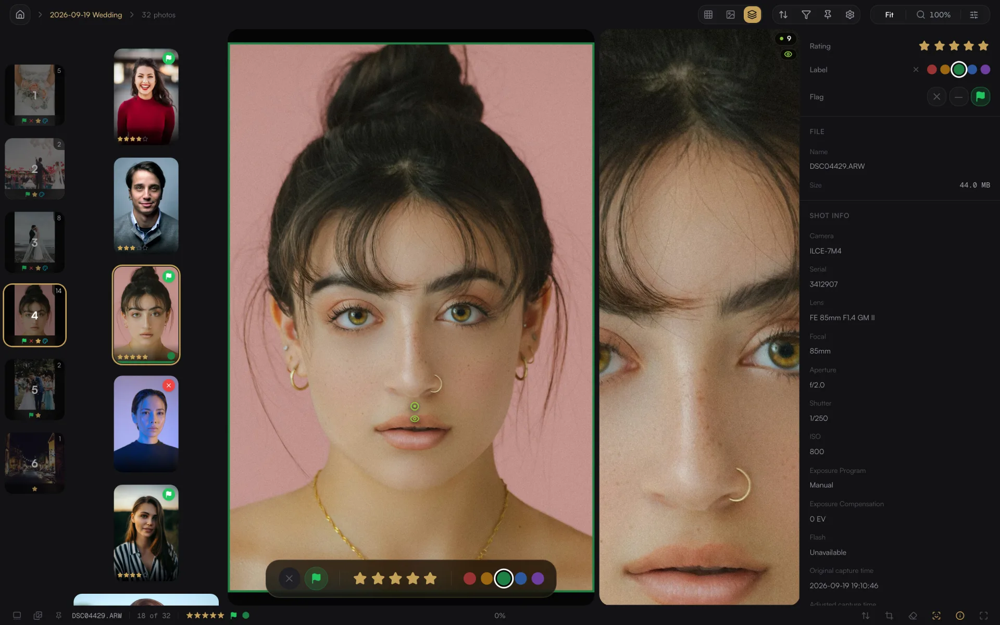
Line up camera clocks
With two bodies or a second shooter, one clock is usually off, and the shoot comes out of order. Align Timelines puts each camera on its own lane: drag a lane until the moments match, nudge it by a second, or let Suggest find where the bursts line up. If a clock changed during the day, split the lane and move each part on its own.
You can also sync from one moment both cameras shot, or type an offset like −3m 42s. Save the offsets to the Clock library and reuse them at the next event. Every change is previewed first and written to XMP.
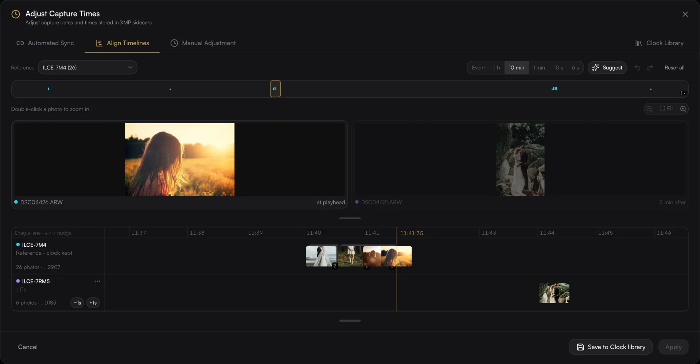
Fast, and laid out your way
Stepping to the next photo feels instant, even on RAW files you've never opened before. Previews and faces are prepared ahead of where you're going, so the next photo is ready when you get there.
Every panel can be resized, moved to the other side or hidden. The filmstrip docks left, right or along the bottom, and you can hide everything but the photo.
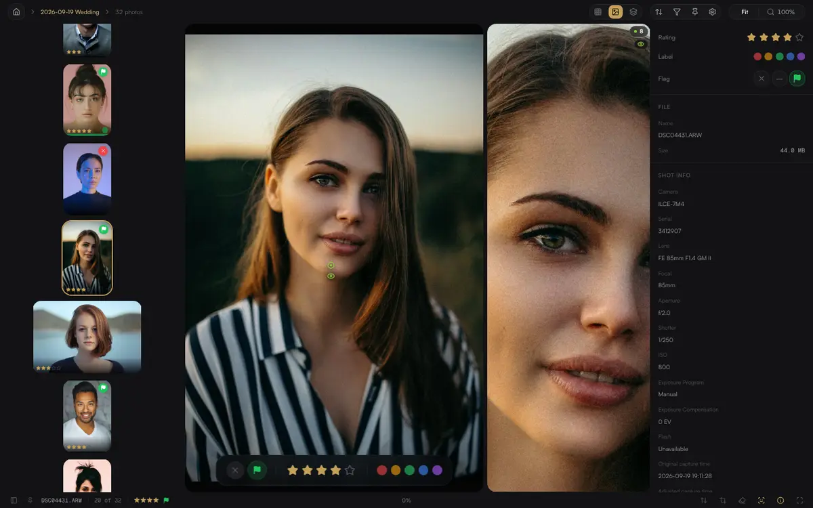
Your keys, your mouse
The default keys follow Lightroom: 0–5 for stars, P X U for flags and 6–9 for color labels. Every shortcut can be changed.
The mouse's back and forward buttons can do any action, such as the next scene or a rating, with separate actions in Remove mode. The scroll wheel can step through photos at the speed you set. On a tablet you can swipe, drag or double-tap.
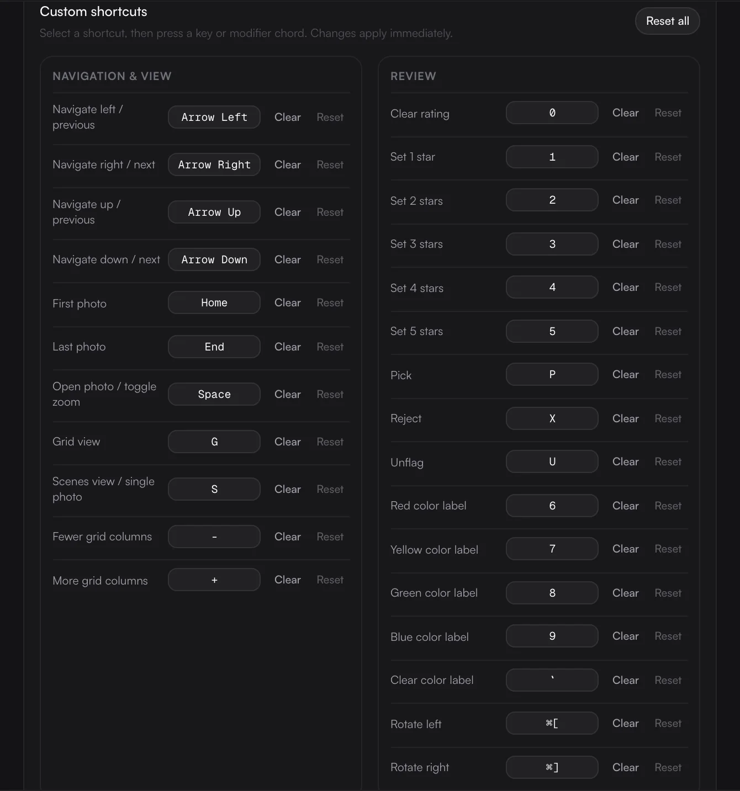
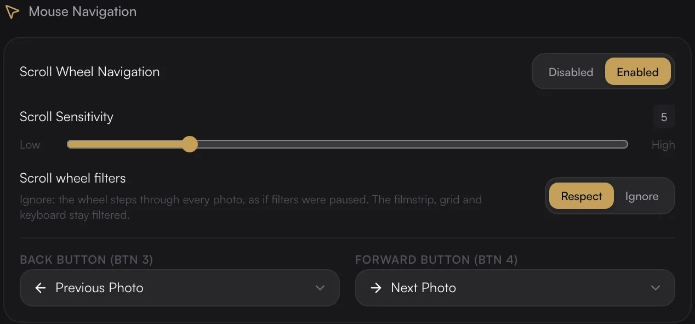
Remove
Brush now, let Lightroom remove it all later
In Lightroom Classic, Generative Remove runs while you wait: brush a cable, wait for it to fill, check it, go to the next photo. Each removal can take minutes, so cleaning up a whole shoot ties you to the screen.
CullThing moves the brushing into the cull. You mark distractions while you're already looking at each photo, and the marks are saved as Lightroom Remove instructions in the photo's XMP. In Lightroom you select the shoot and choose Update AI Settings once. It generates every removal in one batch, so you can leave it running overnight.
Lightroom alone
You wait on every photo.
With CullThing
You brush during the cull; the waiting happens without you.
- Copy marks to similar frames, then adjust them.
- Touching marks become one Lightroom removal automatically.
- Erase part of a mark, or select and move marks.
- Pan, brush, erase and resize with modifier keys and the wheel, without going to the toolbar.
CullThing saves instructions only. Lightroom Classic does the fill, and the original RAW is never changed.
Auto-mark finds the usual suspects
Pick what to look for, and auto-mark adds Remove marks for it: wires and cables, exit signs, power outlets, light switches, smoke detectors, air conditioners, fire extinguishers, bottles, utility poles, street lights, trash cans, hydrants and cars in the background. Or type any other object and keep it in your list.
Group objects into categories such as Indoors, Party and Outdoors. Run it on one photo, or queue a whole selection and keep culling while it works in the background.
Suggestions show striped and stay out of Lightroom until you accept them (Y) or reject them (N). Auto-mark never changes the marks you painted yourself. It runs on your computer after a one-time model download.
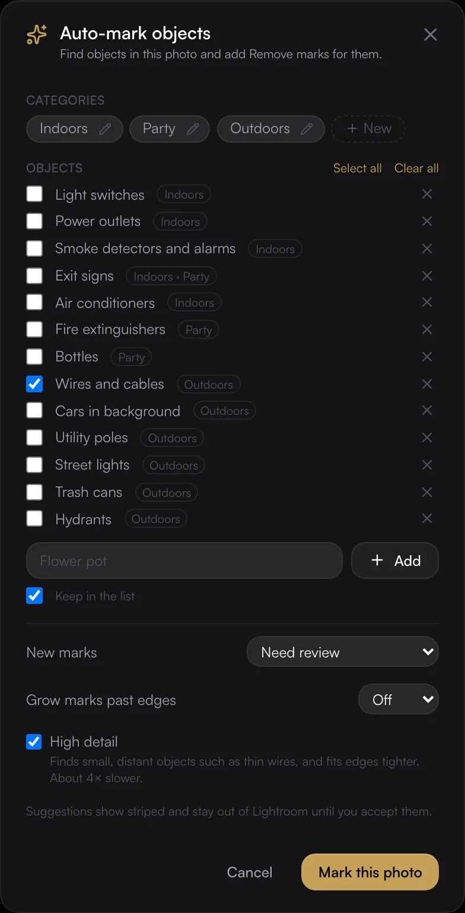
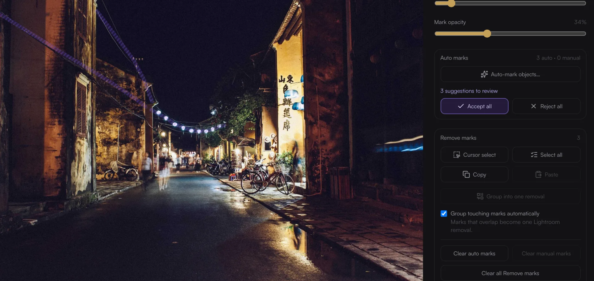
Lightroom
How it fits with Lightroom Classic
- Copy the cards Card Manager copies memory cards to one or more destinations.
- Cull in CullThing Ratings, color labels, crops, angles and Remove marks are saved to XMP next to each RAW.
- Start the edit EditThing writes develop settings to the XMP, or into an open catalog with the Lightroom plug-in.
- Open in Lightroom Import the folder, or choose Metadata → Read Metadata from Files if it's already in your catalog.
- Update AI Settings Select the shoot once. Lightroom generates every removal and expanded edge in one batch.
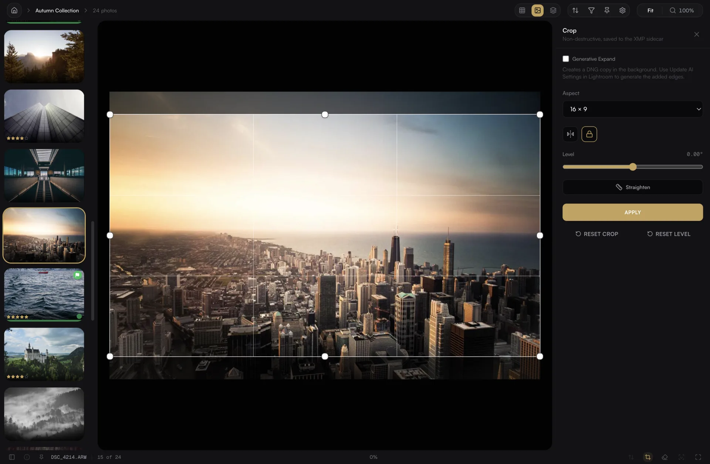
Crop
Aspect presets, a locked ratio and a composition grid.
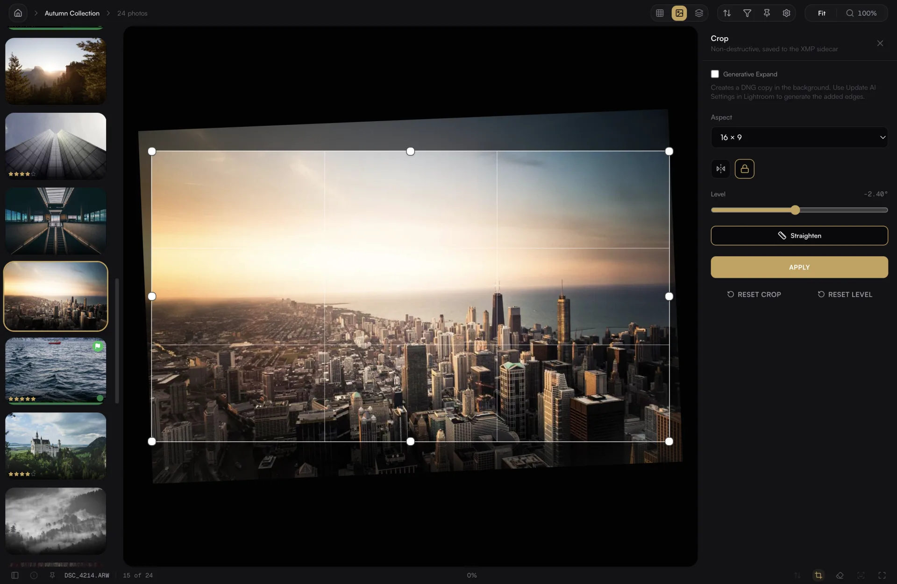
Straighten
An automatic angle, or set the level yourself.
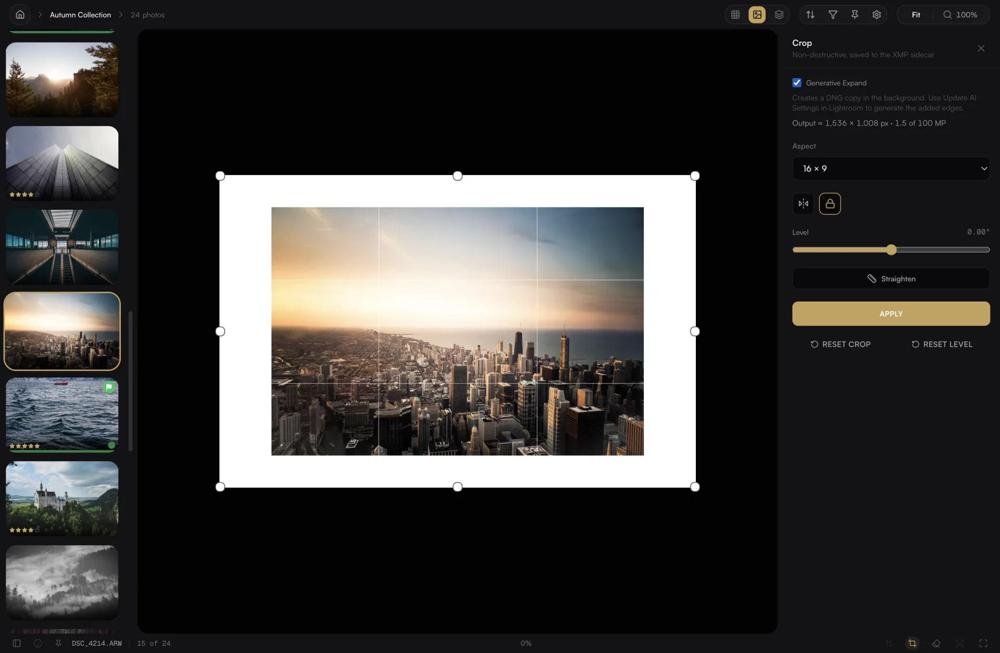
Generative Expand
Prepares a DNG copy; Lightroom fills the new edges in the same batch.
EditThing
A first edit in your style, free and on your computer
Services that learn your editing style usually charge per photo or by subscription, and upload your photos to do it. EditThing is free and runs on your own computer.
Build a Personal profile from photos you've already edited, from Lightroom catalogs or folders of RAW files with XMP. Or start an Instant profile from a Lightroom preset and nine questions about your taste.
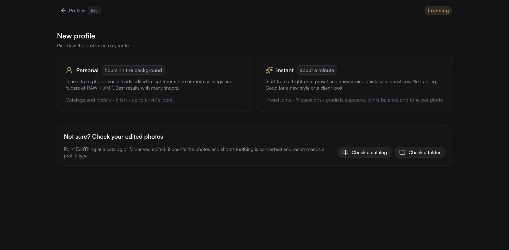
Try it out, fix it in Lightroom, repeat
A profile is rarely right the first time, so EditThing lets you correct it the way you already work:
- Try the profile on about 10 photos from different parts of a shoot. EditThing edits copies; your originals stay as they are.
- Fix those photos in Lightroom.
- EditThing reads what you changed. Changes you made consistently are ticked; mixed ones are left for you to decide.
- Save them to the profile as adjustments. The 10 photos are redone with them, and you check again.
When it looks like your work, apply it to the whole shoot. You can undo a single photo or the whole run.
EditThing needs Adobe DNG Converter and downloads its models during first-time setup.

Cull from your phone
Turn on Remote Access and open the project in a phone or tablet browser on the same network.
Folder stats
See scene coverage, kept and unmarked photos, and breakdowns by time of day and lens.
Find by filename
Jump to any photo with ⌘F / Ctrl+F.
Updates
Choose Check for Updates… in the app menu.
Install
Mac
Paste this into Terminal. It checks the download, installs CullThing in Applications and opens it.
curl -fsSL https://raw.githubusercontent.com/andrei930/cullthing-releases/main/install-macos.sh | /bin/bash
Or use the .dmg. The build isn't notarized yet, so macOS blocks the first launch: open System Settings → Privacy & Security and choose Open Anyway.
Windows
Run the installer. It installs for your account only.
The build isn't signed yet, so SmartScreen may warn you: choose More info, then Run anyway.
EditThing also needs Adobe DNG Converter and downloads its models on first use.